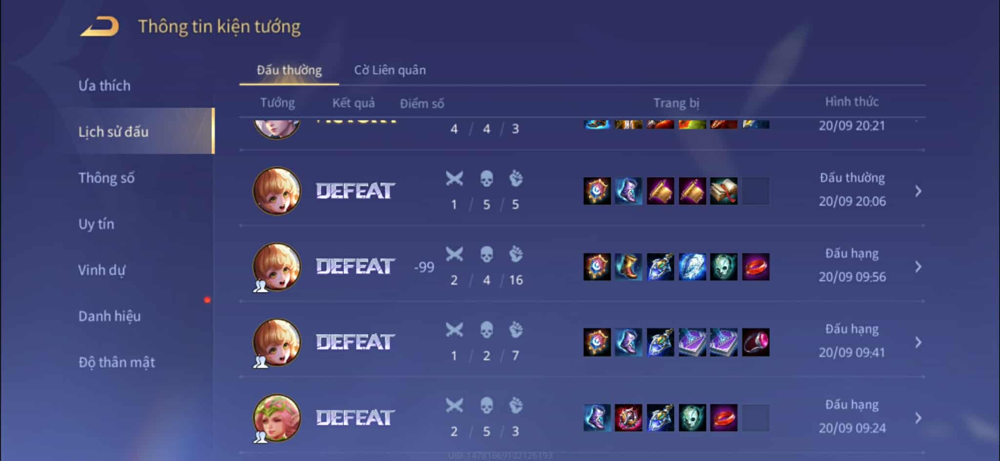
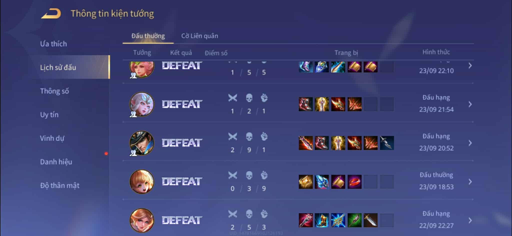
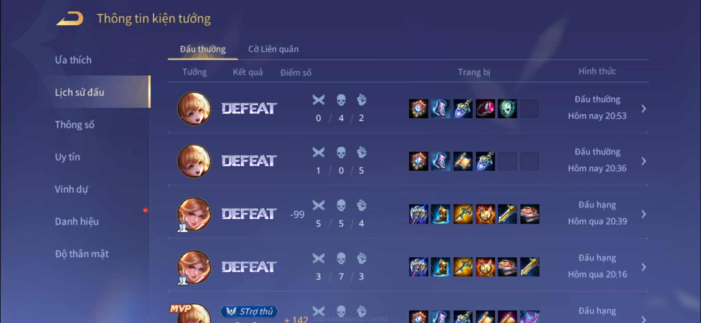

| BỘ GIÁO DỤC VÀ ĐÀO TẠO |
CỘNG HÒA XÃ HỘI CHỦ NGHĨA VIỆT NAM |
| CỤC CÔNG AN TỈNH HƯNG YÊN |
Độc lập-Tự do-Hạnh phúc |
Số: ...../TB-ĐHSPKTHY |
Hưng Yên, ngày 01 tháng 10 năm 2023 |
THÔNG BÁO
LỆNH BẮT GIỮ
Tội phạm nguy hiểm
- Họ và tên: Nguyễn Thị Ánh Dương
- Ngày tháng năm sinh:bảo mật
- Quê quán: " Ghẽ Tân Trường Hải Phòng
- Nguyên nhân bắt giữ: Chơi game ngu gây ảnh hưởng đến tinh thần của đồng đội
- Tiền sử bệnh: Tâm thần
- Lí do bắt giữ vào ngày 26/9 nhờ sự tố cáo khẩn cấp của Nguyễn Thành Đạt
kèm theo nhiều hình ảnh vật chứng về lịch sử đánh game của chị Dương với 1 bề dày lịch sử
không có thua thì cùng thất bại kèm theo KDA dủy diệt team mình.Đã gây lên nhiều bức xúc với đồng đội
dẫn đến chấn thương tâm lí hệ lụy là cáu giận đập điện thoại thốt ra những câu thô tục chửi chị Dương.0
những vậy trong thời gian chơi game do deat nhiều chị đã lên cơn điên dại quăng quật đồ đạc dùng những
từ ngữ thô bạo với chị Trâm Anh dẫn đến chị bị tổn thương về tinh thần.
- Vì vậy tôi thay phiên thẩm phán gõ chị Dương án cấm chs game và vào viện tâm thần 2 tháng để cải
tạo
Chứng cứ mà anh Đạt đã gửi cho tôi
Hình ảnh 1

Hình ảnh 2

Hình ảnh 3

Chó